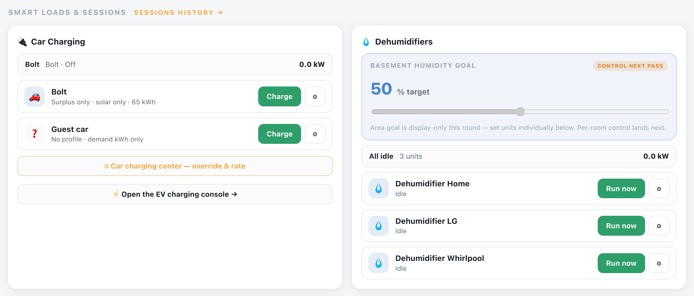
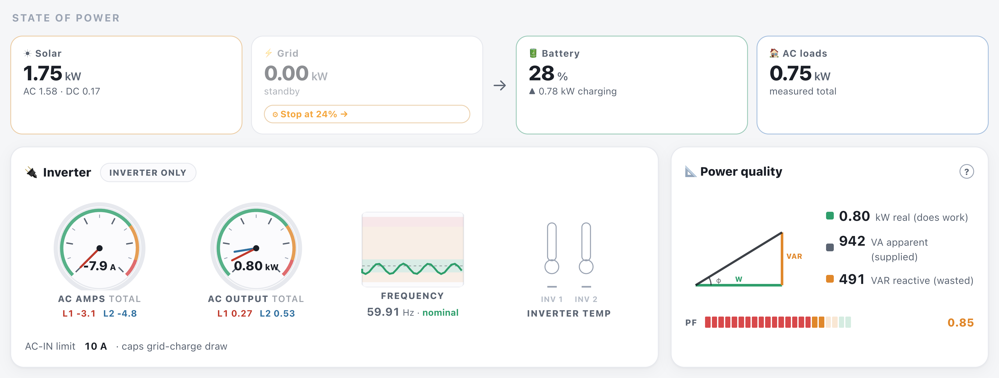
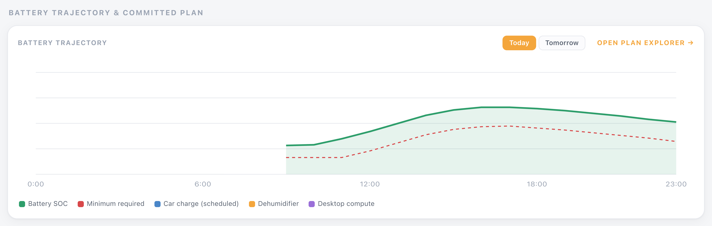
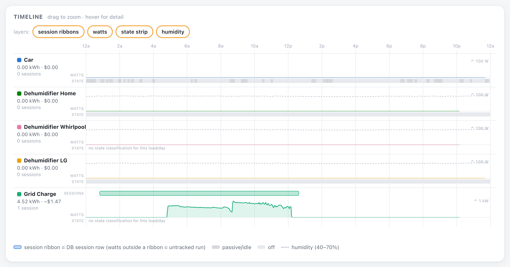
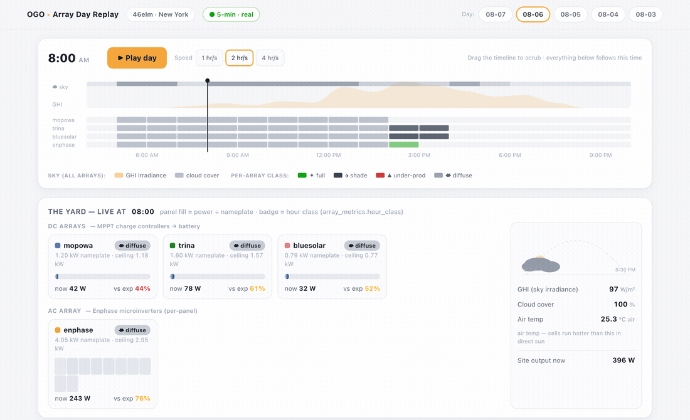
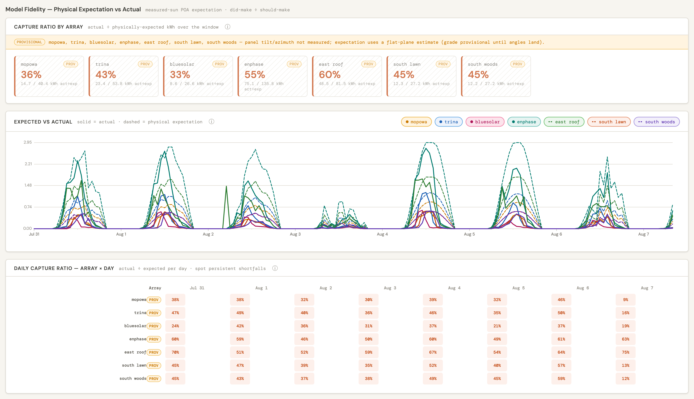
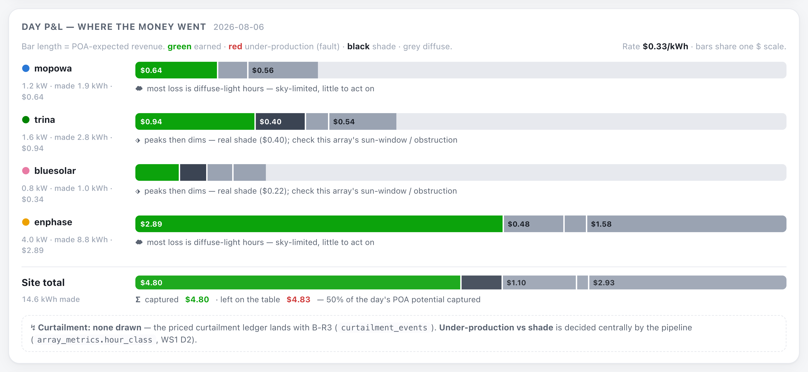

OffGridOperator
Most solar tools are dashboards — they show you a number and leave the decisions to you. OffGridOperator schedules your loads, drives your charging, and holds your battery to a plan — then tells you what your panels should have made, and what it cost you when they didn't.
Surplus solar should charge the car. The dehumidifiers should run when there is power to spare and stop when there isn't. The battery should never quietly walk below what tonight needs. Those are decisions, they happen every few minutes, and nobody wants to make them by hand. OffGridOperator makes them — and shows its work.
The product, screen by screen
Seven screens from a live production install — real hardware, real weather, real money. Pick whichever part you care about.

01 · Control
Each load carries a policy rather than a switch. The car is set to surplus only, solar only, with a target it works toward; the dehumidifiers run against a humidity goal instead of a timer. When you want to override, there is a button — Charge, Run now — and a settings gear per device.
This is the part a dashboard can't do. The system isn't reporting that your car didn't charge; it's the thing that decides when it does.
View full size →
02 · Power
Solar in, grid in, battery state and measured house load, with the flow between them. The inverter cluster reads AC amps per leg, output, frequency and temperature, and the AC-in limit that caps how hard grid-charging is allowed to pull.
Then the panel most tools skip: power quality. Real watts against apparent VA and reactive VAR, with the resulting power factor. That is the difference between the power you're paying for and the power doing work — and on an off-grid system it is the difference between an inverter that copes and one that doesn't.
View full size →
03 · Schedule
The scheduler projects the battery across the day and places the flexible loads — car charging, dehumidifiers, compute — where the energy will actually be. The green curve is where the battery is heading. The red line is the floor it is not allowed to cross.
Everything above that floor is yours to spend, which is exactly the calculation you would otherwise be doing in your head at breakfast, with worse information. Flip to Tomorrow and it has already worked out the same answer for a day that hasn't happened.
View full size →
04 · Sessions
When a load runs, it becomes a session: how long, how many kWh, what it was worth. The grid-charge trace here is the real power profile of a single session — 4.52 kWh drawn, costed at −$1.47 — not a monthly total you have to take on faith.
The layers stack: session ribbons over the raw watt trace over the device's own on/idle/off state, with humidity underneath for the loads that answer to it. Watts outside a ribbon are flagged as an untracked run — the system audits its own bookkeeping rather than assuming it caught everything.
View full size →
05 · Replay
Pick a day and play it. Panel fill tracks each array against its nameplate, the sky panel shows the irradiance, cloud and temperature it was working with, and every array carries a live badge for the hour it's in — full sun, shaded, under-producing, or diffuse-limited.
Mid-afternoon, two arrays flip to shaded while a third stays in full sun. Same sky, different positions. That is a shade pattern you can plan around, and you can see it arrive rather than infer it from a monthly total.
View full size →
06 · Model
Solid lines are what each array made. Dashed is what it should have made. The expectation is plane-of-array irradiance computed from the measured sky and each array's geometry — so a gap is a real capture loss, and "it was cloudy" is already accounted for.
The grid underneath is capture ratio per array, per day. One bad afternoon is weather. A row that stays low all week is hardware, and it's the kind of thing that otherwise goes unnoticed for a season.
View full size →
07 · Settle
Every day closes as a profit-and-loss statement. Each bar is one array's expected revenue, divided into what it actually earned and what it lost — and to what: shade, under-production, or simply diffuse light that was never there to capture.
That split is what makes it actionable. Losses to a shade window are worth a conversation about a tree. Losses to a grey sky are worth nothing at all, and knowing the difference is the point.
View full size →In development
The system is honest about its own confidence — where a number is an estimate, it says so on the screen. These are the pieces that turn those estimates into certainties.
Curtailment is already detected and classified hour by hour. The ledger that puts a dollar figure on it — what a full battery on a sunny afternoon actually cost you — lands next.
Where panel tilt and azimuth have been measured, expectations are exact. Where they haven't, the system falls back to an estimate and flags the grade as provisional rather than pretending. Guided setup closes the gap.
Running today across multiple sites on comparable inverter, charge-controller and battery stacks. The modelling is general; each new equipment family needs its integration. If you'd like yours supported, get in touch.
{kind=link}
{kind=link}
{kind=link}
{kind=link}
{kind=link}
{kind=link}
{kind=link}